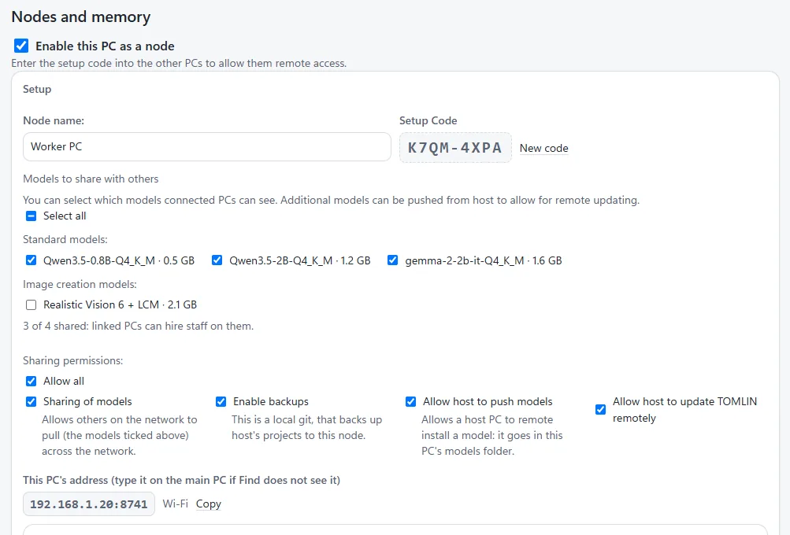

Adding a PC
Turn on the node, find it, type its setup code; the link helper when it will not link.
1. On the other PC
On the other PC, install TOMLIN, then Settings, Network, turn on Enable this PC as a node (a node must have the app lock, so it asks for that PIN first). Give it a name. Every model on it can be used by the PCs linked to it (chat models answer, picture models draw): nothing to tick. Several PCs can link to one node; it answers one at a time. Its Setup Code is shown there.

2. On this PC
Then on this PC: Network, Find PCs on my network, and type the setup code beside the PC it finds.
Not found? Not found? Type its address instead takes the address shown on the node ("This PC's address").
On the node, Can other PCs reach this one? Check lists its own settings with a ✓ or ✗ each: its connection, how its address was set (one typed in by hand with no router behind it keeps every PC out, even when shared files still work), its router, network type, firewall, other security programs and VPNs, then the address to type on this PC; it gives the steps, or the lines, that fix each ✗.
On this PC, the Link helper (under Find other PCs; it opens by itself when Find finds nothing or a link fails) asks whether TOMLIN is open there, its address and its name, tests it from here and says what is in the way: off or asleep, a firewall or antivirus blocking it, TOMLIN not listening, another network, or an address typed wrong (192.178 for 192.168, or the router's own address).
The link PIN box is only for the 6 digits the node shows: its 4-digit app lock PIN never goes there. Also ask for a PIN on the node adds a link PIN (never its app lock PIN) to type as well.
The link is encrypted and the node keeps no history of the work, except a finished answer this PC has not collected yet (kept encrypted for up to 3 days) and token counts for each project, by its name.
The setup code box also takes a guest pass code: see Guest passes.
3. Use it
Then hire staff on this PC as usual and pick the node under Assign a PC and one of its models under Choose a model (or change it later in Edit Staff): each reads like Qwen3.5-9B on "Worker PC". An artist picks one of its picture models the same way. Two PCs can use the same node: while its model works for one, the other waits. On the node, Network says which models linked PCs are using now, and someone at the node is asked first ("Using this can impact connected users", I agree) before using one of them. Staff hired on a node and lent out are retired: their old chats are kept to read.
The PCs you have linked are on Linked PCs; what each may do is ticked on the node.